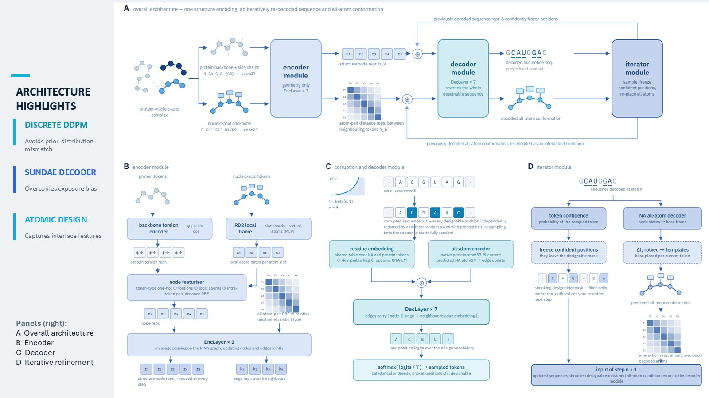
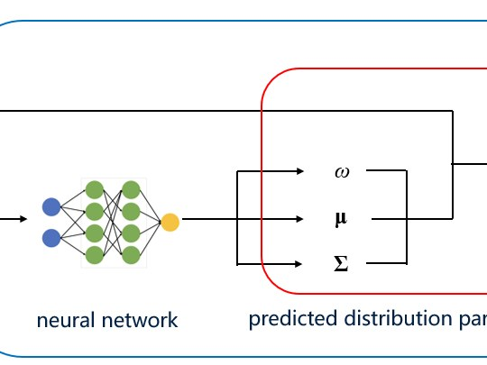

AI for Bio
Projects
Protein design, RNA design, virtual cell, bioinformatics, computational neuroscience, and synthetic biology.

Discrete Diffusion
RNA sequence design with discrete diffusion
Built a generative model from scratch for RNA sequence design conditioned on 3D backbone structures. Replaced autoregressive generation with discrete diffusion, so the sequence is refined iteratively rather than committed to left-to-right.
Read more →
Statistical Energy
Statistical energy functions for design evaluation
A Mixture Density Network predicting statistical energy functions to screen de novo protein designs, with an RNN predicting pairwise residue energies autoregressively. Built the decoy-generation pipeline on SAbDab and PPI.
Read more →
Inverse Folding
ABACUS-T-Mem: membrane protein sequence design
Inverse-folding models trained on soluble proteins generate hydrophilic sequences through the transmembrane region — the input is out of distribution. Fine-tuned ABACUS-T to close that gap: recovery improved from 37.87% to 40.01% on 129 independent test proteins, with the largest gain at the membrane–water interface.
Read more →
Synthetic Biology
Targeted inhibition of tumor angiogenesis
Engineered E. coli Nissle 1917 to display VEGF-binding proteins, with an MMP-responsive masking peptide so the binder activates only inside the tumor microenvironment. Team leader, USTC iGEM 2024.
Read more →